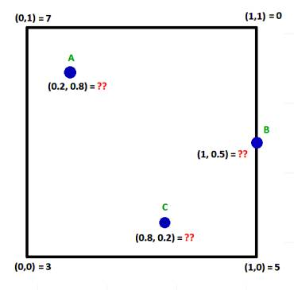

Aradeğerleme (Interpolation)
Özet olarak aradeğerleme eldeki veriye dayanarak bilinmeyen veriyi tahmin etmek, boşlukları doldurma tekniklerine verilen isimdir. Eğer elde x,y verisi var ise ki bu verinin f(x) = y gibi bir fonksiyondan (artı gürültü) ile elde edildiği varsayılır, elde olmayan bir yeni x verilince bunun eşleneceği y değeri acaba ne olur?
Bu bağlamda aradeğerleme model uydurma, modele sorma ikilisi ile çözülebilir, mesela elimde alttaki gibi değerler var, veriye bir düz çizgi uyduruyorum, yeni nokta 7 değeri sorulunca modele danışıyorum, ve oradan gelen y sonucu aradeğerlenen sonuç oluyor.

Fakat illa ki formülsel bir model varlığı da gerekli değil; bazı teknikler yakındaki noktalara bakarak yakın x, ya da eğer y değerleri varsa yine yakın y değerleri döndürebilir. Her iki teknik te çok boyutta kullanılabilir, hem x hem y değerleri vektör içinde olacaktır.
Konunun daha matematiksel açıklamalarını [1,2,3,4] yazılarında bulabiliriz. Bu yazı daha çok pür yazılımsal tekniklere odaklanacak, ve direk kütüphane çağrılarına bakacağız. Daha çok yemek tarifi daha az formül.
Pandas
Pandas paketinin de içinde aradeğerleme yapabilen kodlar var, bunlar bir DataFrame tablosunun eksik değerlerini doldurmak için kullanılabiliyor. Mesela,
import pandas as pd
arr = [1,2,3,np.nan,5,6,7,6,5,np.nan,4,3]
df = pd.DataFrame(arr)
print (df)
0
0 1.0
1 2.0
2 3.0
3 NaN
4 5.0
5 6.0
6 7.0
7 6.0
8 5.0
9 NaN
10 4.0
11 3.0
NaN degerleri eksik. Doldurmak icin basit lineer aradegerleme yapilabilir,
print (df.interpolate(method='linear'))
0
0 1.0
1 2.0
2 3.0
3 4.0
4 5.0
5 6.0
6 7.0
7 6.0
8 5.0
9 4.5
10 4.0
11 3.0
Görüldüğü gibi 3 ile 5 arasındaki değer 4 ile dolduruldu, 5 ile 4 arasındaki 4.5 ile.
Matriste Boş Değerleri Yakın Değerle Doldurmak
Eğer içinde nan yani "tanımsız" ve "boş" değerler olan bir vektörümüz var ise, bu tanımsız değerlerin yerine, yine aynı vektörde, ve o boş değerin iki yanindaki değere yakın olan bir değerle doldurmak isteyebiliriz.
Mesela vektor
1, nan, nan, 2, 2, nan, 0
olsun, ve nan diyen yerlerde 1 ve 2 arası, sonraki nan yerine 2 ve 0
arası değerler olmalı.
data = np.array([1, np.nan, np.nan, 2, 2, np.nan, 0])
print (data)
bad_indexes = np.isnan(data)
good_indexes = np.logical_not(bad_indexes)
good_data = data[good_indexes]
interpolated = np.interp(bad_indexes.nonzero()[0], good_indexes.nonzero()[0], good_data)
data[bad_indexes] = interpolated
print (data)
[ 1. nan nan 2. 2. nan 0.]
[1. 1.33333333 1.66666667 2. 2. 1.
0. ]
Peki işlemi bir matris üzerinde, ve her kolon için ayrı ayrı yapmak istersek?
def pad(data):
bad_indexes = np.isnan(data)
good_indexes = np.logical_not(bad_indexes)
good_data = data[good_indexes]
interpolated = np.interp(bad_indexes.nonzero()[0], good_indexes.nonzero()[0], good_data)
data[bad_indexes] = interpolated
return data
A = np.array([[1, 20, 300],
[np.nan, np.nan, np.nan],
[3, 40, 500]])
A = np.apply_along_axis(pad, 0, A)
print (A)
[[ 1. 20. 300.]
[ 2. 30. 400.]
[ 3. 40. 500.]]
RBF
Bu tekniği daha önce [4]'de detaylı işledik. Fakat açıkça söylemek gerekirse en yavaş işleyen aradeğerleme tekniklerinden biri RBF'tır. Yine de bazen kullanışlı olabilir, basit bir örnekte görelim, ana fonksiyon üç boyutlu bir fonksiyon olsun,
from matplotlib import cm
def func(x, y):
s1 = 3; x1 = 5.0; y1 = 5.0
g1 = np.exp( -4 *np.log(2) * ((x-x1)**2+(y-y1)**2) / s1**2)
return g1
x = np.linspace(0,10,30)
y = np.linspace(0,10,30)
xx,yy = np.meshgrid(x,y)
zz = func(xx,yy)
fig = plt.figure()
ax = fig.gca(projection='3d')
surf = ax.plot_surface(xx, yy, zz, cmap=cm.coolwarm,linewidth=0, antialiased=False)
plt.savefig('aradegerleme-interpolation_02.png')

Eğer func fonksiyonu elde olmasaydı, onun verilerine bakarak RBF ile
yeni bir nokta için, 4,4 diyelim, aradeğerlemeyi alttaki gibi
yapardık,
from scipy.interpolate import Rbf
rbfi = Rbf(xx,yy,zz,function='gaussian')
print ('Aradeg:',rbfi([4],[4]), 'Gercek:',func(4,4))
Aradeg: [0.53970076] Gercek: 0.540029869446153
Görüldüğü gibi kullanım oldukca basit; x,y,z değerlerini iki boyutlu matris olarak verdik (tek boyutlu vektör de işliyor), RBF objesi üzerinden ek değerler için aradeğerleme yaptık.
CloughTocher2DInterpolator
Hızlı işleyen bir kod, CloughTocher2DInterpolator.
from scipy.interpolate import CloughTocher2DInterpolator
interp = CloughTocher2DInterpolator(list(zip(xx.flatten(), yy.flatten())), zz.flatten())
print (interp([4],[4]))
[0.54049742]
x2 = np.linspace(0,10,50)
y2 = np.linspace(0,10,50)
xx2,yy2 = np.meshgrid(x2,y2)
zclough = interp(xx2,yy2)
fig = plt.figure()
ax = fig.gca(projection='3d')
surf = ax.plot_surface(xx, yy, zz, cmap=cm.coolwarm,linewidth=0, antialiased=False)
plt.savefig('aradegerleme-interpolation_03.png')
{kind=link}
Farkettiysek üstteki ızgara her ekseni 50 parçaya böldü, interp
objesi 30 parçalık izgara üzerinden yaratılmıştı; böylece elde olmayan
bir sürü değeri sormuş olduk ama nihai grafik hala orijinale
benziyor. Ayrıca Clough/Tocher yaklaşımı çok hızlı işler.
NearestNDInterpolator
En yakın değerleri kullanarak aradeğerleme yapan bir araçtır. Bazı durumlarda üstteki daha çetrefil yaklaşımlardan daha iyi sonuç verebilir.
from scipy.interpolate import NearestNDInterpolator
interp = NearestNDInterpolator(list(zip(xx.flatten(), yy.flatten())), zz.flatten())
print (interp([4],[4]))
[0.63261986]
Izgara İçinde En Yakın Değer Aradeğerlemesi
Aradeğerleme çoğunlukla bir ızgara bazlı yapılır, elde ayrıksal bir
ızgaradaki noktalara tekabül eden veri vardır, bu veriyi temel alarak
diğer noktaları kestirmek gerekir. Bir teknik şöyle: eğer ızgara
içinde düştüğümüz hücreyi bulabilirsek, o hücrenin dört köşesinin
x,y,z değerleri ile aradeğerleme yapılabilir. Burada iki lineerli
(bilinear) aradeğerleme tekniği var, her kenara olan uzaklığı ölçüp
bunlarla bir ağırlık değeri yaratıyor ve o ağırlıklara göre 4 bilinen
z değerini kullanıp yeni z değerini üretiyor. [5] bağlantısından
adapte edilen bir kod alttadır, x,y içinde linspace sonucu dizi
zz içinde ise gerçek fonksiyon sonucu meshgrid değerleri olduğunu
varsayıyor.
def bilinear_interpolator(x_new,y_new):
i = np.searchsorted(x, x_new) - 1
j = np.searchsorted(y, y_new) - 1
wx = (x[i+1] - x_new) / (x[i+1] - x[i])
wy = (y[j+1] - y_new) / (y[j+1] - y[j])
Pn = (1 - wx)*(1 - wy)*zz[i,j] + wx*(1 - wy)*zz[i+1,j] + (1 - wx)*wy*zz[i,j+1] + wx*wy*zz[i+1,j+1]
return Pn
Buna benzer bir yaklaşımla biz de kendi tekniğimizi yaratabiliriz, mesela içine düştüğümüz hücrenin dört kenarına olan bir basit uzaklık hesabı yaparız, uzaklığı benzerliğe çeviririz (yakın olan daha önemli olsun diye) ve bu ağırlıklarla dört köşe z değerinin ağırlıklı ortalamasını alırız.

Resme göre anlatırsak A'nin x,y değerleri 0.2,0.8 sol üst köşeye daha yakındır, o zaman A için bir z değeri ortalaması hesaplamak gerekiyorsa sol üst köşenin z değeri (7 olarak gösteriliyor) diğer üç köşedeki z değerlerinden (0,3,5) ortalamada daha fazla etkili olmalıdır. Bir algoritma bu yakınlıkları dört köşe için ayrı ayrı hesaplayabilir, ve bir ağırlıklama tekniği oluşturur.
Örnek veriyi yaratalım,
from matplotlib import cm
np.random.seed(0)
def func(x, y):
s1 = 0.2; x1 = 36.5; y1 = 32.5
s2 = 0.4; x2 = 36.1; y2 = 32.8
g1 = np.exp( -4 *np.log(2) * ((x-x1)**2+(y-y1)**2) / s1**2)
g2 = np.exp( -2 *np.log(2) * ((x-x2)**2+(y-y2)**2) / s2**2)
return g1 + g2
D = 20
x = np.linspace(36,37,D)
y = np.linspace(32,33,D)
xx,yy = np.meshgrid(x,y)
zz = func(xx,yy)
fig = plt.figure()
ax = fig.gca(projection='3d')
surf = ax.plot_surface(xx, yy, zz, cmap=cm.coolwarm,linewidth=0, antialiased=False)
plt.savefig('aradegerleme-interpolation_04.png')

Verili x,y noktasının hangi hücre içinde olduğunu bulalım önce, burada
np.searchsorted cağrısı yapıldı, bu çağrı sıralı bir dizi içinde
aranan öğenin hangi aralığa düştüğünü hesaplıyor. Tüm meshgrid
çağrısından gelen ızgara içinde aramak yerine daha az noktası olan
düz dizi x,y içinde aramak daha iyi.
def find_corners(xi,yi):
idx1 = np.searchsorted(x, xi, side="left")
idx2 = np.searchsorted(y, yi, side="left")
cs = [(idx2,idx1),(idx2-1,idx1),(idx2,idx1-1),(idx2-1,idx1-1)]
return cs
Örnek bir noktanın içinde olduğu hücrenin indis değerleri,
cs = find_corners(36.5,32.4)
print (cs)
[(8, 10), (7, 10), (8, 9), (7, 9)]
Noktanın içine düştüğü hücre kenarları bulununca onlara olan uzaklık hesaplanır, uzaklık bir yakınlık / benzerlik hesabına çevrilir, ve bu hesap her köşenin z değeri üzerinden bir ağırlıklı ortalama için kullanılır.
def cdist(p1,p2):
distances = np.linalg.norm(p1 - p2, axis=1)
return distances
def cell_interp(x, y, points):
a = np.array([x,y]).reshape(-1,2)
b = np.array(points)[:,:2]
ds = cdist(a,b)
ds = ds / np.sum(ds)
ds = 1. - ds
c = np.array(points)[:,2]
iz = np.sum(c * ds) / np.sum(ds)
return iz
def grid_interp(intx,inty):
cs = find_corners(intx,inty)
i,j = cs[0][0],cs[0][1]
i,j = cs[1][0],cs[1][1]
i,j = cs[2][0],cs[2][1]
i,j = cs[3][0],cs[3][1]
i0,j0 = cs[0][0],cs[0][1]
i1,j1 = cs[1][0],cs[1][1]
i2,j2 = cs[2][0],cs[2][1]
i3,j3 = cs[3][0],cs[3][1]
introw = [(xx[i0,j0],yy[i0,j0],zz[i0,j0]),
(xx[i1,j1],yy[i1,j1],zz[i1,j1]),
(xx[i2,j2],yy[i2,j2],zz[i2,j2]),
(xx[i3,j3],yy[i3,j3],zz[i3,j3])]
return cell_interp(intx,inty,introw)
Test amaçlı olarak yeni, daha yoğun bir izgara yaratalım,
np.vectorize ile aradeğerleme fonksiyonumuzu tüm matris üzerinde
uygulanabilir hale çevirebiliriz, ve hesabı yapıp gerçek değerler ile
tahmin arasında bir hata karesi ortalaması (mean square error) hesabı
yaparız,
x2 = np.linspace(36.0001,36.9999,D*2)
y2 = np.linspace(32.0001,32.9999,D*2)
xx2,yy2 = np.meshgrid(x2,y2)
zz2 = func(xx2,yy2)
grid_interp_vec = np.vectorize(grid_interp,otypes=[np.float64])
zz2_grid = grid_interp_vec(xx2,yy2)
print (np.mean(np.square(zz2-zz2_grid)))
0.0006008344674974951
Oldukça yakın. Ayrıca çağrı hızlı işledi. Grafikleyelim,
fig = plt.figure()
ax = fig.gca(projection='3d')
surf = ax.plot_surface(xx2, yy2, zz2_grid, cmap=cm.coolwarm,linewidth=0, antialiased=False)
plt.savefig('aradegerleme-interpolation_05.png')
{kind=link}
QuadTree
Üzerinden aradeğerleme yapılacak değerler düzgün izgara şeklinde ise üstteki teknik iyidir. Fakat bazen dağınık bir halde, içinde boşluklar, eksik verisi olan bir öbek elde olabilir, bu durumda hangi hücre içine düşüldüğü, dört köşe bulunması, vb. manevralar etkili olmaz.
Eksik değerlerle iş yapabilmek için mevcut veriyi düz liste olarak
kabul edip (izgara olup olmadığına bakmadan) x,y kordinatları
üzerinden en yakın noktaları hızlı bir şekilde bize döndüren bir veri
yapısı kullanmamız gerekir. Bu tür yapılardan bazılarının detaylarını,
KDTree, BallTree gibi, [6]'da gördük. Bu yazıda QuadTree denen bir teknik
kullanacağız, paket quads içinde.
class QuadTreeInterpolator:
def __init__(self,x,y):
self.tree = quads.QuadTree((np.mean(x), np.mean(y)), 100, 100)
def cell_interp(self, x, y, points):
a = np.array([x,y]).reshape(-1,2)
b = np.array(points)[:,:2]
ds = cdist(a,b)
ds = ds / np.sum(ds)
ds = 1. - ds
c = np.array(points)[:,2]
iz = np.sum(c * ds) / np.sum(ds)
return iz
def append(self, x, y, z):
for xx,yy,zz in zip(x,y,z):
self.tree.insert((xx,yy),data=zz)
def interpolate(self,x,y):
res = self.tree.nearest_neighbors((x,y), count=4)
points = np.array([[c.x, c.y, c.data] for c in res])
return self.cell_interp(x, y, points)
q = QuadTreeInterpolator(xx.flatten(), yy.flatten())
q.append(xx.flatten(), yy.flatten(), zz.flatten())
qinterp = np.vectorize(q.interpolate,otypes=[np.float64])
zz2_quad = qinterp(xx2,yy2)
print (np.mean(np.square(zz2-zz2_quad)))
0.0005101521958506852
Bu teknik te iyi sonuç verdi.
Kaynaklar
[1] Eğri Uydurma, Aradeğerleme (Interpolation) - 1
[2] Eğri Uydurma, Aradeğerleme (Interpolation) - 2
[3] Eğri Uydurma, Aradeğerleme (Interpolation) - 3
[4] Aradeğerleme (Interpolation) - 4 - Dairesel Baz Fonksiyonları (Radial Basis Functions -RBF-)
[5] https://www.bottomscience.com/bilinear-interpolation-method-python/
[6] En Yakın k-Komşu (k-Nearest Neighbor), Geometrik Yakınlık Hesabı
Yukarı